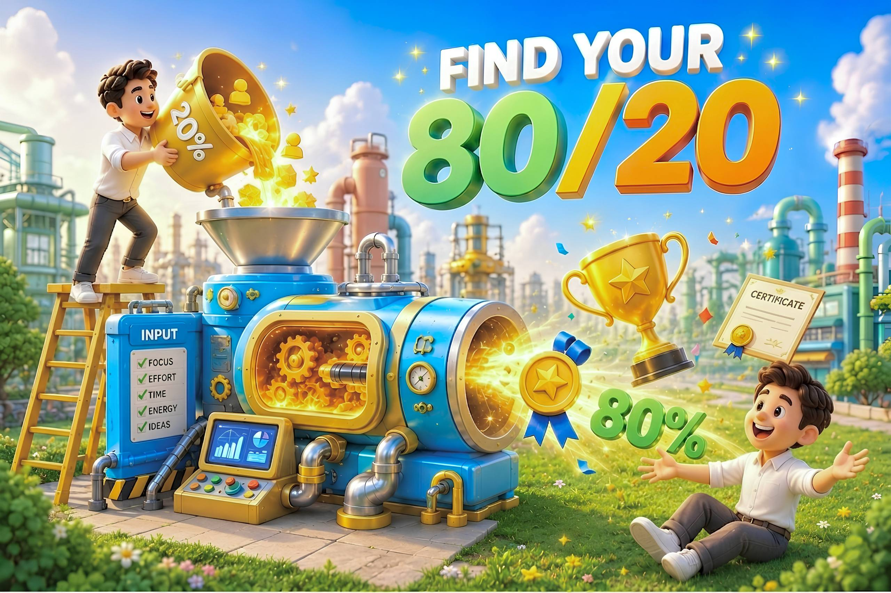

Dừng trạng thái "Overload". Khám phá nguyên lý Pareto để tìm lại 20% nỗ lực cốt lõi tạo ra 80% kết quả đột phá trong công việc và cuộc sống.
Bạn có thấy hình ảnh của mình? Sáng thức dậy với một danh sách dài dằng dặc những việc “muốn làm”, “phải làm”. Nhưng cuối ngày nhìn lại: Kiệt sức, quá tải, và kết quả vẫn dậm chân tại chỗ.
Chúng ta muốn quá nhiều, nhưng lại làm không hiệu quả chỉ vì chưa tìm ra 20% hành động cốt lõi để tạo nên 80% bước chuyển mình.

Thấu hiểu bản chất và ý nghĩa của từng việc để tránh làm việc như một cỗ máy. Khi hiểu được ý nghĩa thực sự, sự trì hoãn tự động biến mất.
Nhận diện xu hướng tính cách, những giá trị thực sự thuộc về bạn thay vì kiệt sức chạy theo tiêu chuẩn và kỳ vọng của người khác.
Thông qua bài đánh giá ngắn, chúng ta sẽ cùng định vị lại 3 điểm chạm cốt lõi.
Bạn đang theo đuổi bao nhiêu mục tiêu cùng lúc? Việc cố gắng cải thiện mọi thứ đôi khi lại là cái bẫy khiến bạn không thể tiến xa ở bất kỳ đâu. Nhìn nhận lại mức độ ưu tiên hiện tại.
Bạn là người lên kế hoạch quá chi tiết rồi sợ hãi không dám bắt đầu, hay lao vào làm ngay để rồi nhanh chóng bỏ cuộc? Hiểu cách mình hành động để tìm ra điểm nghẽn năng lượng tinh thần.
Đừng tiếp tục lãng phí 80% công sức cho những việc chỉ mang lại 20% giá trị. Hãy giữ cho tâm trí mình sắc bén, cuộc sống tinh gọn và năng lượng trọn vẹn nhất.
BẮT ĐẦU ĐÁNH GIÁ (3 PHÚT)